Префектура Кагава · Дзэнцудзи · паломничество
Семь храмов Кукая: малое паломничество по Кагаве
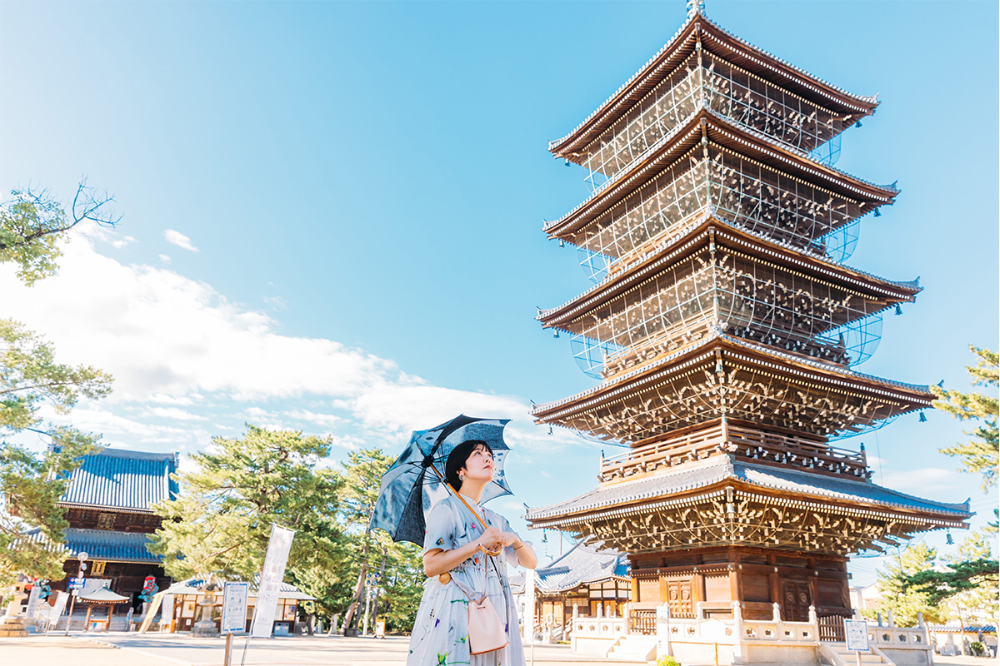
Паломничество по всем 88 храмам Сикоку (о-хэнро) требует недель, поэтому у него существует короткая версия: маршрут «семи мест», семь храмов, связанных с Кукаем. Два дня в горах Кагавы вместе с текстильным дизайнером Юи Мацудой.
Смысл
Что такое «семь мест»
Кобо Дайси Кукай, буддийский монах IX века, основатель школы Сингон, родом из Кагавы, принёс в Японию эзотерический буддизм. В 2023 году исполнилось 1250 лет со дня рождения Кукая, и Дзэнцудзи, храм на его родине, купался в праздничном настроении. Именно здесь начинается маршрут «семи мест».
Паломничество по 88 храмам Сикоку (о-хэнро) соединяет храмы, связанные с Кукаем; пройти все 88 решаются немногие. Для них и придуман укороченный вариант, маршрут «семи мест»: он описан ещё в эдоской книге «Сикоку хатидзю хассё дзися мэйсё». В каждом из семи храмов выдают госюин, каллиграфическую печать храма, которую паломники собирают в особую книжку.
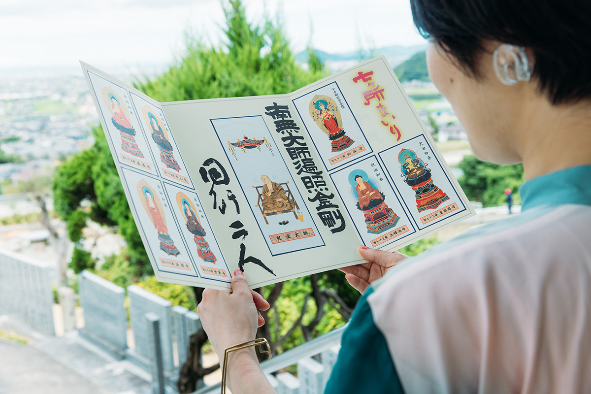
День первый
Дзэнцудзи: храм на месте дома, где родился Кукай
В 807 году Кукай, вернувшись из Китая, заложил здесь первый храм школы Сингон; в 813-м, через шесть лет, стройка завершилась. Имя храму дали в честь отца, Сайки Дзэнцудзи. Вместе с горой Коя-сан и храмом Тодзи в Киото Дзэнцудзи почитают как одно из трёх великих священных мест Кобо Дайси.
За южными вратами открывается гаран, главный храмовый комплекс: территория храма занимает около 45 000 м² и делится на два двора, на востоке гаран, на западе Тандзёин, двор рождения. Пятиэтажная пагода восточного двора целиком выстроена из дзельквы: 43 метра высоты, статус важной культурной ценности, видна она из разных концов города. Рядом разрослось камфорное дерево, чей возраст перевалил за тысячу лет. По дорожкам ходят паломники в белых одеждах и местные жители, зашедшие на прогулку.
«Раньше я бывала в храмах разве что на поминальных службах и о буддизме не задумывалась: восемьдесят восемь храмов звучат как высокий барьер. А маршрут семи мест осилить легко. Дзэнцудзи просторный, здесь свободно дышится. Ведь именно здесь родился Кукай».
Юи Мацуда
Пять гор выстроились за храмом гребень за гребнем, словно ширма, и служат ему заимствованным пейзажем.
«Даже подъезжая к Дзэнцудзи, я раньше останавливалась в благоговении и внутрь не заходила. Теперь буду приходить побродить по территории и побездельничать. Когда работа закружит, захочу сбежать сюда и перезагрузиться».
Юи Мацуда
После молитвы гуляем по посёлку при храме. За навесом с надписью «Мэйбуцу хонкэ Катапан» прячется кондитерская Кумаока: в витринах каменный хлеб и катапан, хозяйка отвешивает покупку и заворачивает её в бумажный кулёк.
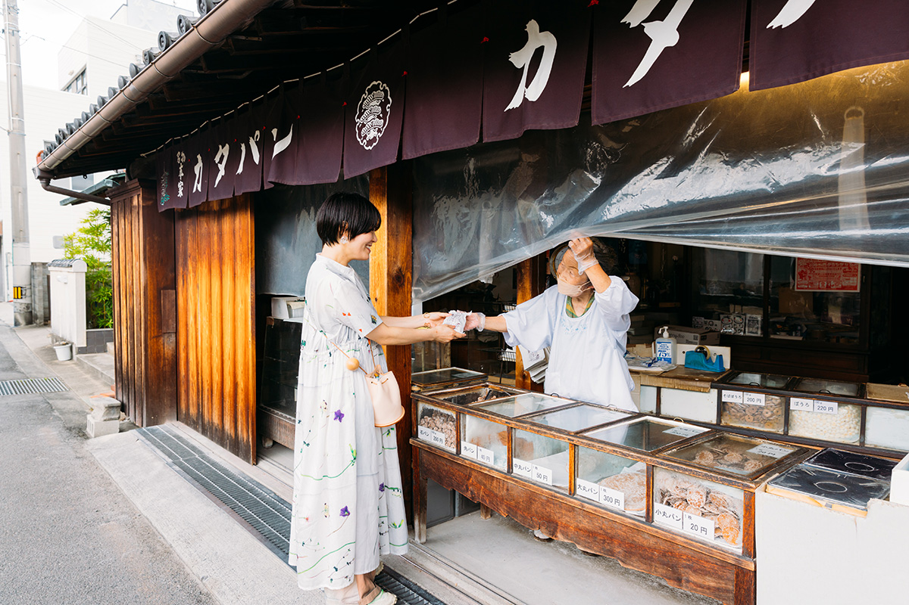
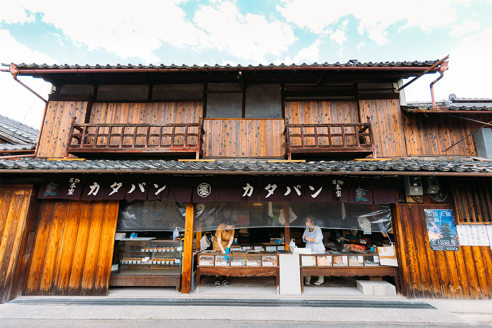
«Эти сладости любит вся моя семья, хочу увезти с собой. Вкус простой, но такого нет больше нигде. И печенье боро, и креветочные крекеры здесь отменные».
Юи Мацуда
Из сладкого к удону: в удонной Охара хозяин, ушедший из офисной работы, не скрывает страсти к сумо, и она проступает по всему залу.
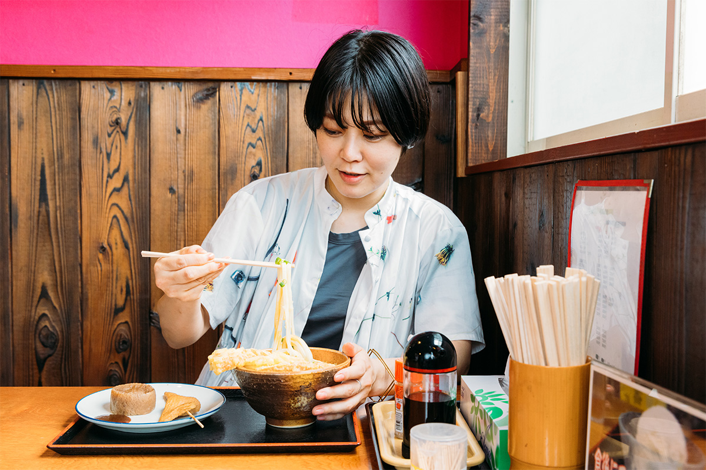
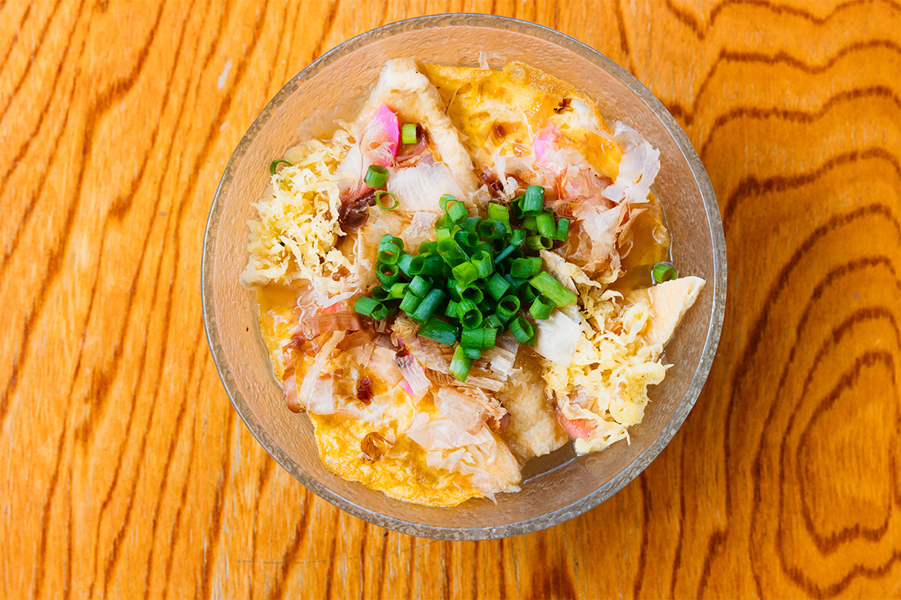
Ночуем в храмовой гостинице Ироха кайкан. Отдельные комнаты и собственный источник снимают всякий страх слова «подвижничество»; в большом бассейне с природной горячей водой, забившей прямо на территории, плещешься с 16:00 до 21:00. Ровно в 21:00 закрываются ворота на территории храма, и это идеальный отбой перед ранним подъёмом.
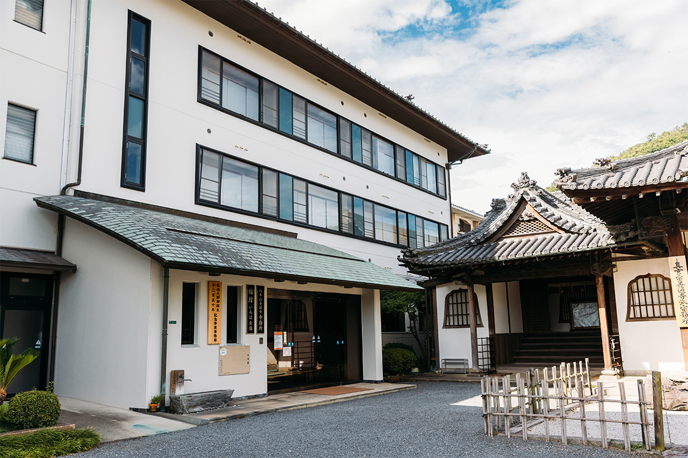
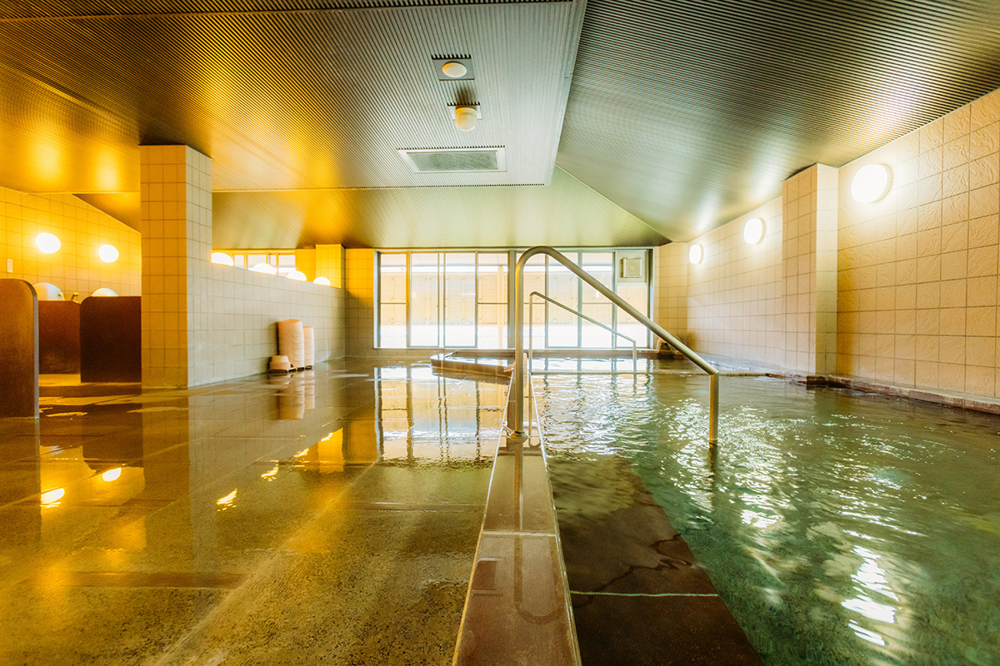
День второй
Утренняя служба и тьма под Миэйдо
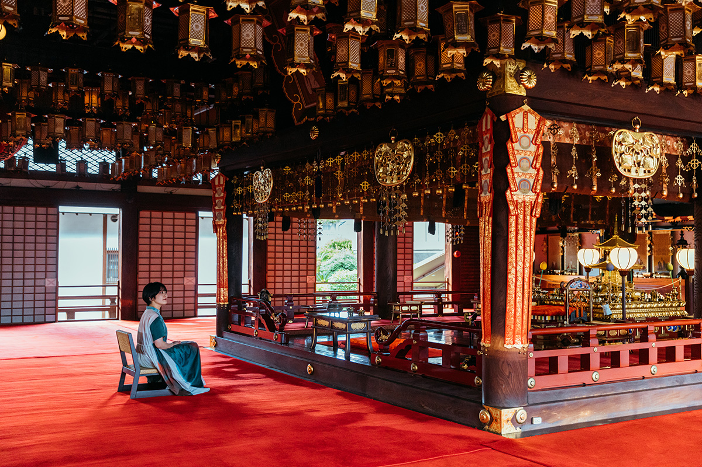
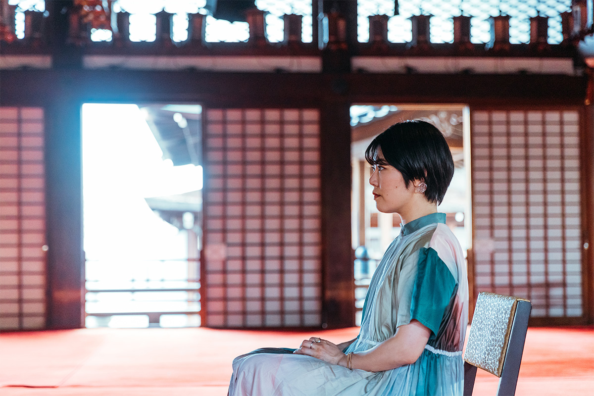
Наутро ждёт особое утро: служба в Миэйдо. После проповеди монаха паломники спускаются в обход кайдан: подземный проход под павильоном выводит к святому месту рождения Кукая, и кланяться ему приходится снизу. Во тьме идёшь, держась за стены с буддийскими росписями; темнота здесь не помеха, а духовная практика: идёшь во мраке и заново смотришь на себя.
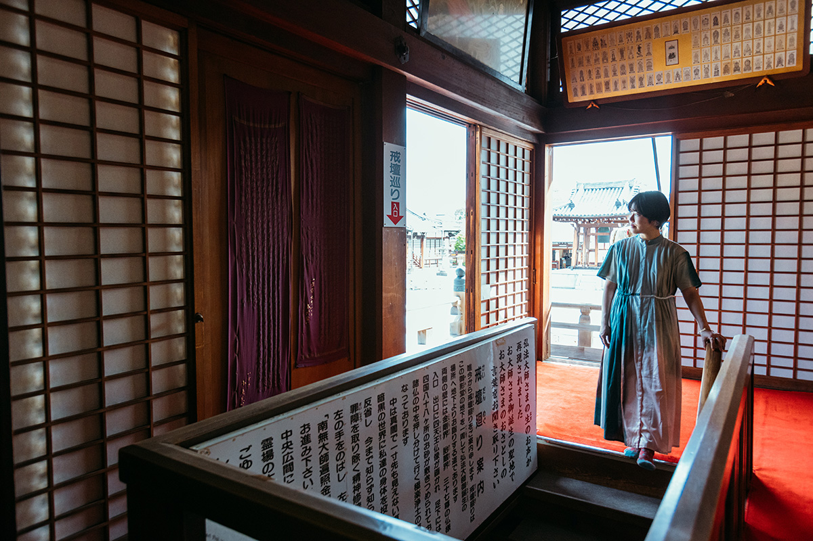
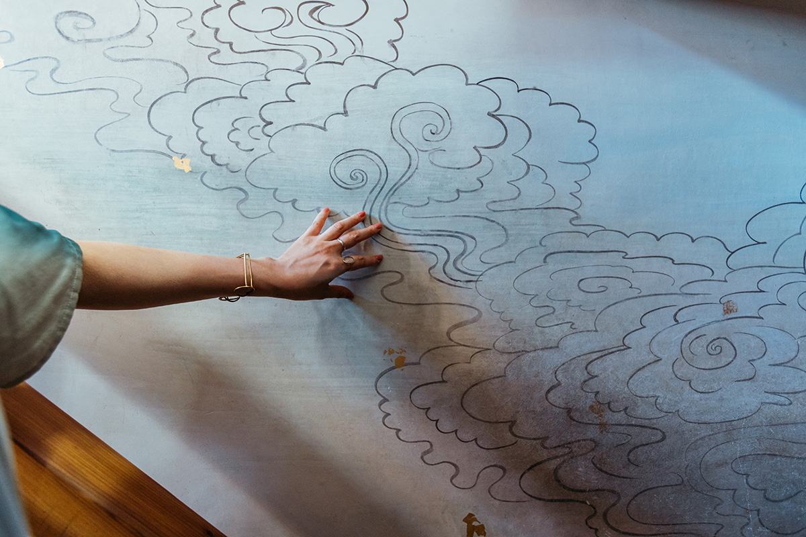
«В проповеди я услышала то, что важно для жизни: сострадание, о котором забываешь, когда целиком уходишь в свои заботы. Буддизм как раз и передаёт сострадательное сердце».
Юи Мацуда
Гора Гахайсидзан: 481 метр и отвесная скала
После особых впечатлений начинается сам маршрут семи мест. На машине он укладывается в один день, но не все дороги лёгкие. Самый крутой участок лежит между храмом Сюссякадзи и его внутренним храмом Сясингатакэ-дзэндзё на вершине горы Гахайсидзан, 481 метр, самой высокой из пяти гор Дзэнцудзи. От храмовых ворот около 1,4 км по асфальту, и лишь на миг покажется, что это просто.
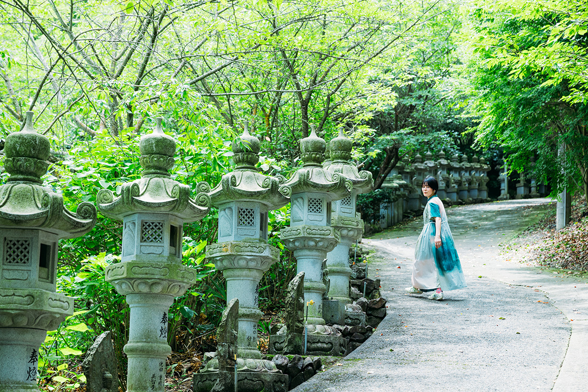
«Сначала я шла бодро, но склон оказался таким крутым. Когда сил совсем не осталось, у ивы с чудотворной водой зачерпнула холодной воды и ожила. Дальше шла неспешно: разглядывала травы у обочины, вдыхала прохладу под деревьями».
Юи Мацуда
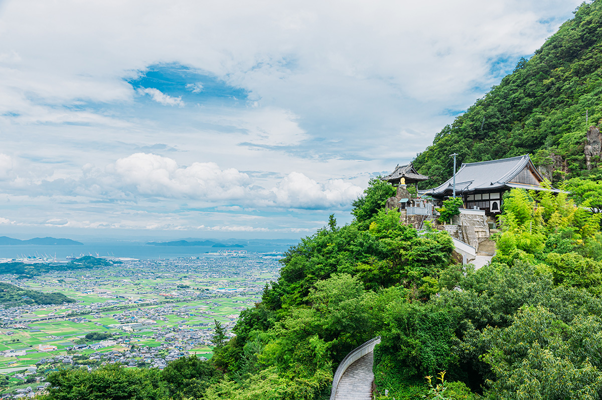
Главное божество храма Сюссякадзи, статуя будды Сяка (Шакьямуни), вырезана самим Кукаем; храм задуман как главная обитель спасения живых существ и почитается как исходная точка пострига Кукая. Внутренний храм стоит на отвесной скале: над обрывом каменный алтарь для священного огня гома и статуя юного Дайси. Легенда говорит, что сюда, к будде, бросился юный Кукай. Здесь звонят в колокол, благодаря за благополучно пройденный путь, и прощаются с горой.
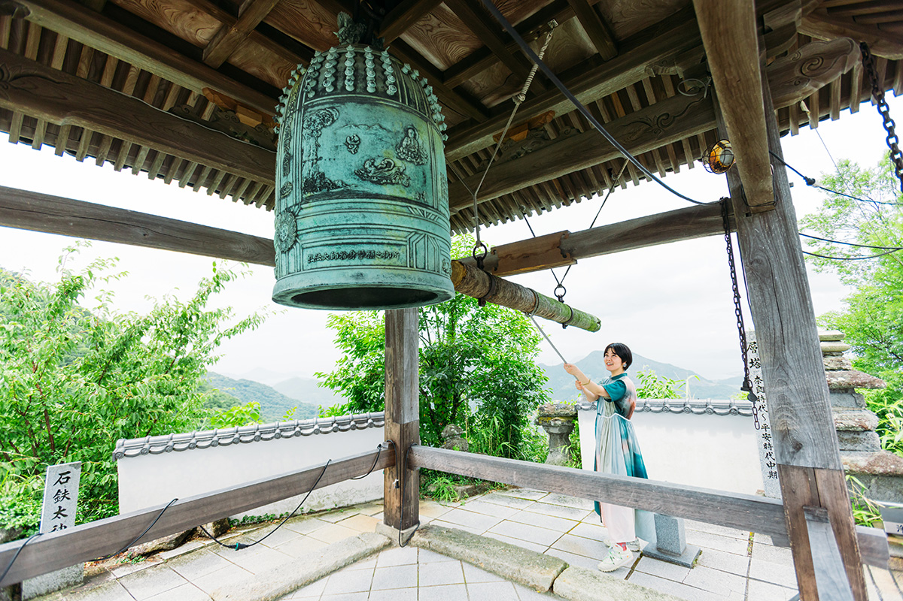
Так, идя за Кукаем от храма к храму, паломник получает узы с буддой. Какие узы сложит Юи Мацуда в своей обычной жизни, покажет время.
Маршрут
Семь храмов «семи мест»
Короткие справки о каждом храме маршрута: номер в паломничестве, чтение имени и главная история.
№ 71 Ияданидзи
Имя храма означает «долину Будды». По преданию, Кукай, услышав повеление Дзао-гонгэна, поместил здесь пять мечей и позолоченный бронзовый колокольчик гокорэй с пятизубцовой ваджрой на рукояти, а горе дал имя Кэнгодзан, «гора Пяти мечей». На скале прямо высечены триада Амида и другие образы.
№ 72 Мандарадзи
Имя храму дало то, что Кукай поместил здесь на хранение мандалу и провёл поминальную службу. Храм построили в 596 году как родовой храм семьи Сайки, из которой происходил Кукай: говорят, из всех священных мест Сикоку он самый древний. Вернувшись из Китая, Кукай возвёл гаран, и храм переименовали в Мандарадзи.
№ 73 Сюссякадзи
Место, где Кукай узрел Будду. Сохраняется легенда, что юный Кукай бросился с утёса. Во внутреннем храме на вершине Гахайсидзан над обрывом стоят каменный алтарь гома и статуя юного Дайси.
№ 74 Коямадзи
Горное имя храма, Иодзан («гора Царя врачевания»), дано по будде Якуси (Будде-целителю), исцеляющему болезни. В скальном гроте слева от павильона Дайсидо хранится вырезанный Кукаем Бисямонтэн. С храмом у кроликов особая связь: по всей территории прячутся кроличьи фигурки с самыми разными мордами.
№ 75 Дзэнцудзи
Место рождения Кукая. Вместе с Коя-сан и Тодзи в Киото входит в тройку великих священных мест Дайси. Павильоны стоят шеренгами, в хранилищах национальные сокровища и важные культурные ценности.
№ 76 Кондзодзи
По преданию, богиня Каритэй (Кисимодзин) впервые в Японии явилась именно здесь. В этом храме родился племянник Кукая, наставник Тисё Дайси. Храм известен и тем, что в нём жил генерал Ноги, прибывший первым командиром 11-й дивизии старой армии: на территории растёт сосна, которую вернула в храм жена генерала.
№ 77 Дорюдзи
Храм построили в память о кормилице: Вакэ-но Мититака по ошибке ранил её стрелой. Кукай вырезал будду Якуси, ставшего главным божеством. Храму приписывают чудеса исцеления от глазных болезней.
Дзэнцудзи
- Адрес
- префектура Кагава, город Дзэнцудзи, Дзэнцудзи-мати, 3-3-1
- Телефон
- +81 877-62-0111
- Сайт
- zentsuji.com
Кондитерская Кумаока
- Адрес
- префектура Кагава, город Дзэнцудзи, Дзэнцудзи-мати, 3-4-11
- Телефон
- +81 877-62-2644
- Часы работы
- 9:00–16:00 (продажи до исчерпания)
- Выходные
- вторник и третья среда месяца (в праздничные дни работает)
- Цены
- каменный хлеб: 200 иен за 100 г
Удонная Охара
- Адрес
- префектура Кагава, город Дзэнцудзи, Дзэнцудзи-мати, 919-2
- Телефон
- +81 877-63-2981
- Часы работы
- 10:00–15:00 (до распродажи)
- Выходные
- среда и четверг
- Сайт
- ohara.adrgm.com
Храмовая гостиница «Ироха кайкан»
- Телефон
- +81 877-62-0111 (приём заявок 9:00–17:00, бронь только по телефону)
- Номера
- 50 японских комнат
- Цены
- 10 000 иен с человека за ночь с ужином и завтраком, 7 000 иен с завтраком, налог включён
Семь храмов: адреса
- № 71 Ияданидзи
- префектура Кагава, город Митоё, посёлок Мино, Оми-ото, 70; +81 875-72-3446
- № 72 Мандарадзи
- префектура Кагава, город Дзэнцудзи, Ёсихара-мати, 1380-1; +81 877-63-0072
- № 73 Сюссякадзи
- префектура Кагава, город Дзэнцудзи, Ёсихара-мати, 1091; +81 877-63-0073
- № 74 Коямадзи
- префектура Кагава, город Дзэнцудзи, Хирота-мати, 1765-1; +81 877-63-0074
- № 75 Дзэнцудзи
- префектура Кагава, город Дзэнцудзи, Дзэнцудзи-мати, 3-3-1; +81 877-62-0111
- № 76 Кондзодзи
- префектура Кагава, город Дзэнцудзи, Кондзодзи-мати, 1160; +81 877-62-0845
- № 77 Дорюдзи
- префектура Кагава, уезд Накатадо, посёлок Тадоцу, Китагамо, 1-3-30; +81 877-32-3577